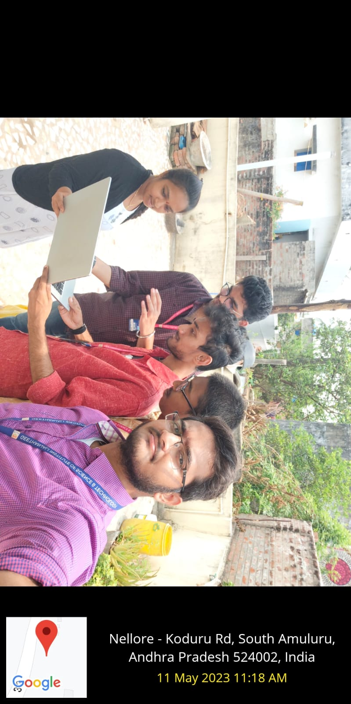
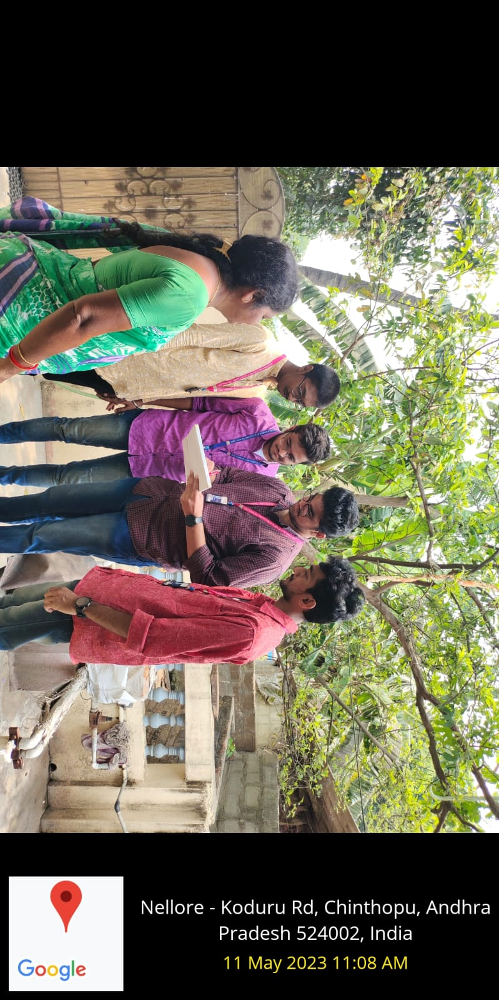

What is Laptop?
A laptop is a personal computer that can be easily moved and used in a variety of locations.
Rural people utilising laptops
Rural adults are also less likely than suburban and urban adults to have multiple devices or services that enable them to go online:
Three-in-ten adults who live in rural communities report owning or having a desktop or laptop computer, a smartphone, a home broadband connection and a tablet computer, compared with 44% of urban and 43% of suburban adults.
More than 50% of Indian students in rural and urban areas don't have access to internet: Survey
A recent survey by Learning Spiral revealed that more than 50% of Indian students in both rural and urban areas don't have access to the internet.
